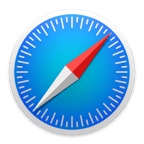

واتساب ويب
هذا المتصفح غير مدعوم
نحن نوصي باستخدام واتساب على إحدى المتصفحات التالية:
Google Chrome
Mozilla Firefox
Microsoft Edge
واتساب يدعم أيضاً:
Opera

Safari (نظام تشغيل macOS 10.10 والإصدارات الأحدث فقط)